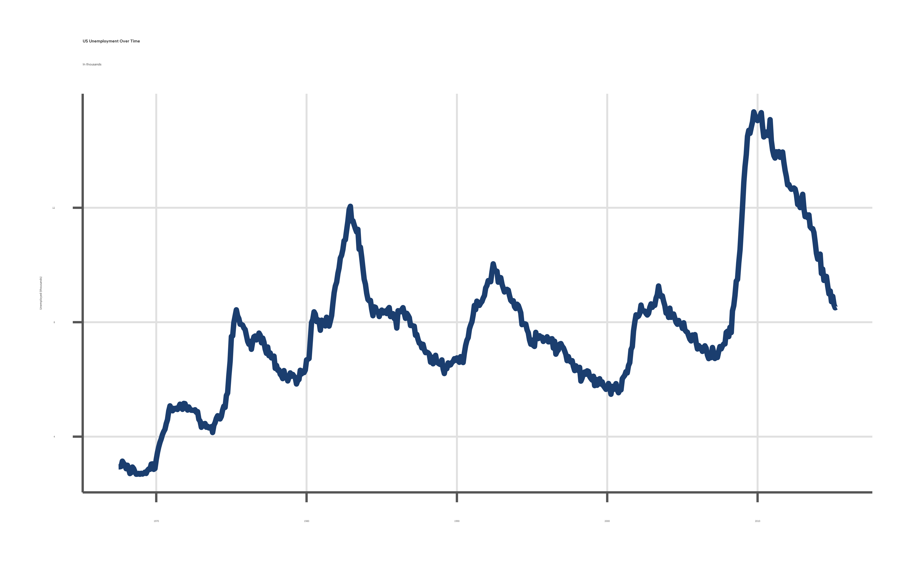
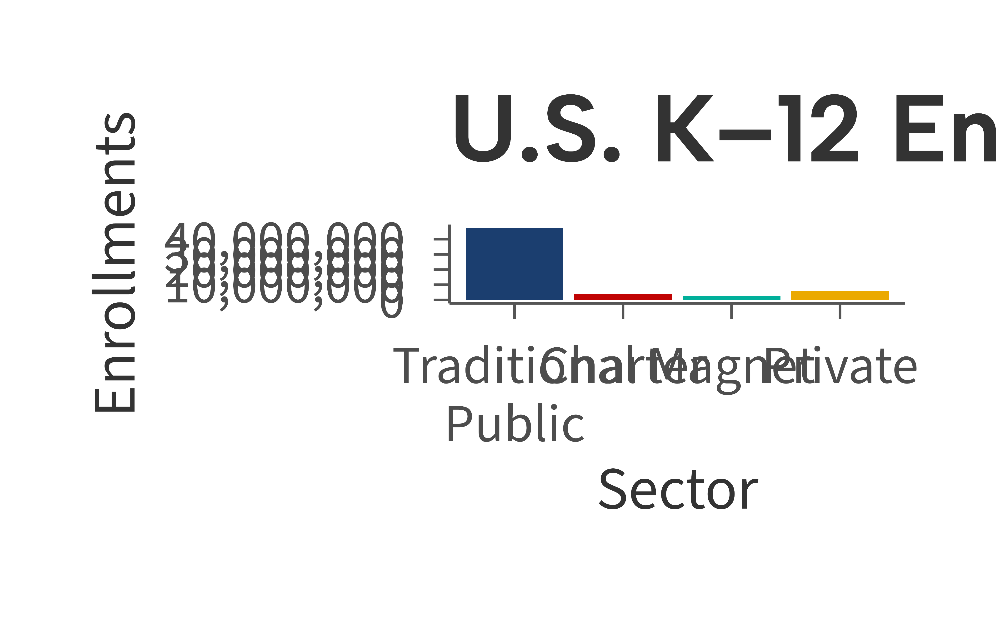
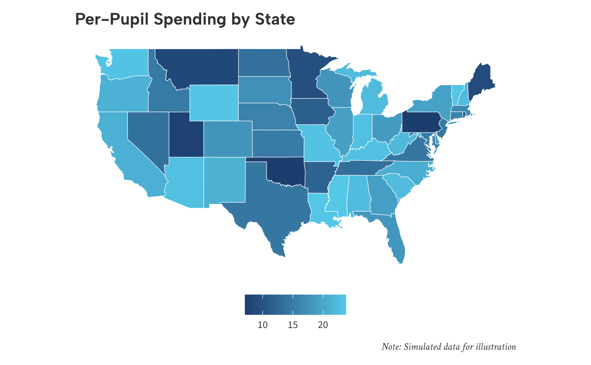
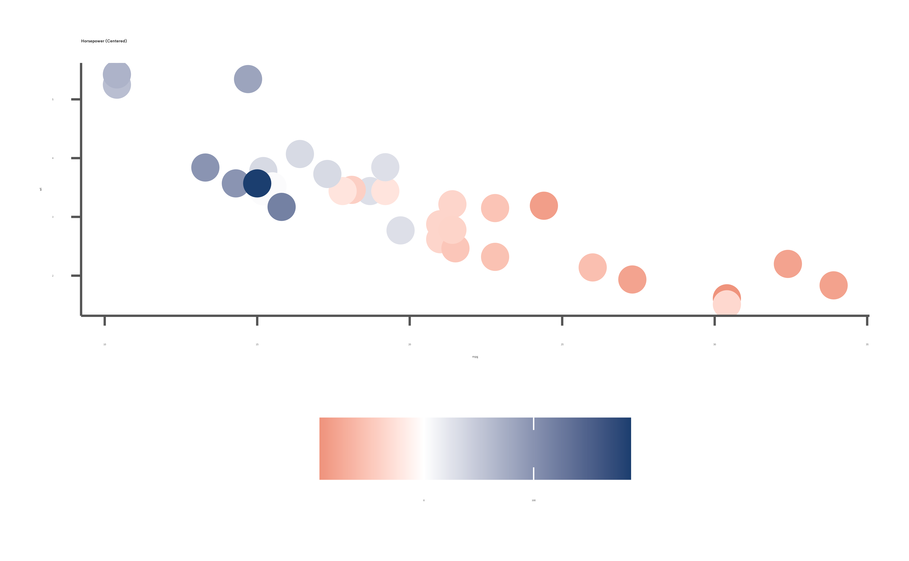

Overview
The ggaib package provides ggplot2 themes and color
scales for the Annenberg Institute at Brown University. It includes four
theme variants and discrete, continuous, and diverging color scales
using the Institute’s brand palette.
Brand Colors
Access the full palette or select specific colors:
aib_colors()
#> navy red emerald yellow sky taupe brown gray
#> "#1B3E6F" "#C00404" "#00AF9A" "#EBA900" "#55C8E8" "#B6B09D" "#503629" "#97A3AE"
aib_colors("navy", "red", "emerald")
#> navy red emerald
#> "#1B3E6F" "#C00404" "#00AF9A"Themes
There are four core themes included in the ggaib
pacakge, each optimized for a different use case. All themes share the
same base font and color palette, but differ in gridline and axis
styling to suit different types of visualizations.
Publication (default)
set.seed(42)
districts <- data.frame(
spending = c(rnorm(40, 11, 2), rnorm(40, 15, 2.5), rnorm(40, 13, 3)),
avg_score = c(rnorm(40, 250, 15), rnorm(40, 270, 12), rnorm(40, 258, 18)),
urbanicity = rep(c("Urban", "Suburban", "Rural"), each = 40)
)
ggplot(districts, aes(spending, avg_score, color = urbanicity)) +
geom_point(size = 2) +
scale_color_aib() +
scale_x_continuous(labels = aib_label("dollar")) +
scale_y_continuous(limits = c(215, 300), breaks = seq(200, 300, 20)) +
labs(
title = "Per-Pupil Spending and Math Achievement",
subtitle = "Simulated school district data",
x = "Per-Pupil Expenditures\n($1,000s)",
y = "Avgerage Math Score",
color = "Urbanicity",
caption = "Note: Simulated data for illustration"
) +
theme_aib()
Grid
set.seed(42)
years <- 2005:2023
gap_data <- data.frame(
year = rep(years, 2),
group = rep(c("Higher-Income", "Lower-Income"), each = length(years)),
score = c(
270 + cumsum(rnorm(length(years), 0.3, 0.8)),
240 + cumsum(rnorm(length(years), 0.8, 0.9))
)
)
ggplot(gap_data, aes(year, score, color = group)) +
geom_line(linewidth = 1) +
scale_color_aib() +
scale_x_continuous(
breaks = seq(2005, 2025, 3)
) +
scale_y_continuous(
limits = c(215, 300),
breaks = seq(200, 300, 20)
) +
labs(
title = "Reading Achievement Gap Over Time",
subtitle = "4th-grade scores by household income",
x = NULL,
y = "Average Reading Score",
color = NULL
) +
theme_aib_grid()
Slide
enrollment <- data.frame(
type = c("Traditional\nPublic", "Charter", "Magnet", "Private"),
students = c(47.3, 3.7, 2.5, 5.7)
)
enrollment$type <- factor(enrollment$type, levels = enrollment$type)
enrollment$students <- enrollment$students * 1e6
ggplot(enrollment, aes(type, students, fill = type)) +
geom_col() +
scale_fill_aib() +
scale_y_continuous(labels = aib_label("comma")) +
labs(
title = "U.S. K\u201312 Enrollment by School Type",
x = "Sector",
y = "Enrollments"
) +
theme_aib_slide() +
theme(legend.position = "none")
Map
set.seed(42)
states <- ggplot2::map_data("state")
spending_by_state <- data.frame(
region = unique(states$region),
spending = runif(length(unique(states$region)), 7, 24)
)
map_df <- merge(states, spending_by_state, by = "region")
ggplot(map_df, aes(long, lat, group = group, fill = spending)) +
geom_polygon(color = "white", linewidth = 0.2) +
scale_fill_aib_c() +
labs(
title = "Per-Pupil Spending by State",
fill = "$ (1,000s)",
caption = "Note: Simulated data for illustration"
) +
coord_fixed(1.3) +
theme_aib_map()
Color Scales
Continuous
set.seed(42)
schools <- data.frame(
enrollment = runif(80, 200, 1500),
avg_score = rnorm(80, 260, 20),
st_ratio = runif(80, 10, 30)
)
schools$avg_score <- schools$avg_score - (schools$st_ratio - 20) * 1.5
ggplot(schools, aes(enrollment, avg_score, color = st_ratio)) +
geom_point(size = 2) +
scale_color_aib_c() +
scale_x_continuous(labels = aib_label("comma"), breaks = seq(0, 1500, 300)) +
scale_y_continuous(limits = c(215, 300), breaks = seq(200, 300, 20)) +
labs(
title = "Student-Teacher Ratio Across Schools",
x = "Enrollment",
y = "Avg. Test Score",
color = "Student-Teacher\nRatio"
) +
theme_aib()
#> Warning: Removed 3 rows containing missing values or values outside the scale range
#> (`geom_point()`).
Diverging
set.seed(42)
districts2 <- data.frame(
enrollment = runif(80, 500, 5000),
avg_score = rnorm(80, 255, 20),
spending_change = rnorm(80, 0, 6)
)
ggplot(districts2, aes(enrollment, avg_score, color = spending_change)) +
geom_point(size = 2) +
scale_color_aib_div() +
scale_x_continuous(labels = aib_label("comma"), breaks = seq(0, 5000, 500)) +
scale_y_continuous(limits = c(215, 300), breaks = seq(200, 300, 20)) +
labs(
title = "Year-over-Year Spending Change",
x = "Enrollment",
y = "Avg. Test Score",
color = "Spending\nChange (%)"
) +
theme_aib()
#> Warning: Removed 2 rows containing missing values or values outside the scale range
#> (`geom_point()`).